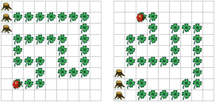

Programmieren Sie Kara so, dass er die Spur von Kleeblättern "auffrisst"! Da Sie wissen, dass die Spur nie entlang eines Baumes geht, kann das Programm beendet werden, sobald Kara auf einem Kleeblatt vor einem Baum steht. Sie können selbst bestimmen, ob Sie auf einem Kleeblatt oder davor starten wollen.